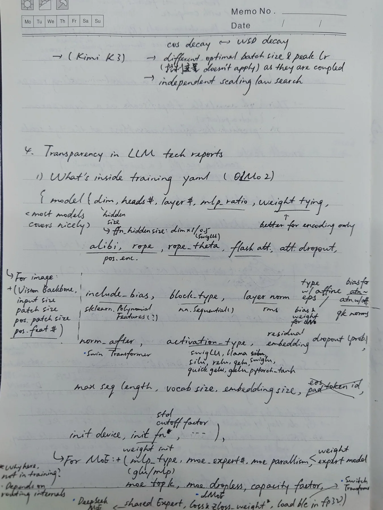

Keep the ink. Remove the ambiguity.
The three photos are one contiguous configuration checklist: model and MoE structure → losses and trainer state → scheduler, tokenizer, initialization, evaluation, and data. Each pin preserves the literal reading, classifies the mark, and records what must change before the term is safe to teach.
What a pin proves
A pin is not a correctness badge. It connects source ink to a normalized term, confidence, correction, lesson, and evidence route. Semantic clusters keep related underlines and arrows together.
Inspect source versions{kind=link}

Probe index
Every semantic mark cluster remains findable even when pins overlap at this scale. Filter by question semantics to distinguish probable Boolean fields from learner questions and genuinely unresolved transcription.
How the three pages connect
Page 1 starts with a scaling-schedule question, then inventories model, vision, and MoE configuration. Its MoE branch flows directly into Page 2’s router and loss diagram. Page 2 continues from trainer state into the optimizer; Page 3 continues with its scheduler, then finishes tokenizer, initialization, eval, and data-loader fields.
→
→
→
Corrections that change the mental model
These are not spelling fixes. Each one prevents a wrong implementation or a misleading technical report.
FlashAttention and fused cross-entropy are different kernels.
FlashAttention tiles exact attention to reduce HBM traffic. Fused linear cross-entropy avoids materializing a full vocabulary-logit tensor. Neither implies the other.
Router z-loss and vocabulary z-loss act on different logits.
Both can penalize a squared log-partition, but one stabilizes expert routing and the other stabilizes LM-output logits.
Question marks are typed, not erased.
compile? is plausibly Boolean; alpha_f? is numeric; mm? is uncertain transcription. The UI keeps those categories separate.
“Won’t work with FSDP” is too categorical.
Initialization compatibility depends on materialization, meta tensors, sharding, and synchronization. It must be verified for the implementation.